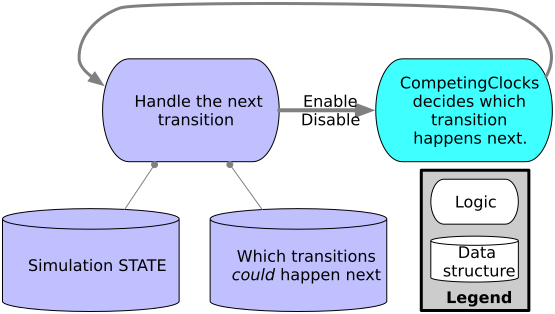

CompetingClocks
Fast, composable samplers for stochastic discrete-event simulation. This package gives your simulation or simulation framework statistical features like common random numbers, likelihood tracking, and first-class support for non-Exponential distributions.
This isn't a simulation framework. It's a component you can use to sample event times for simulation or to calculate the likelihood of a sample path for statistical estimation.
- Simulations of chemical reactions.
- Queueing theory models of networks, production, and computation.
- Epidemiological models of disease spread among individuals.
- Vector-addition systems.
- Generalized stochastic Petri nets.
- Generalized semi-Markov Processes.

Implementation Based on
- P. J. Haas, Stochastic Petri Nets: Modelling, Stability, Simulation. in Springer Series in Operations Research. New York, NY: Springer-Verlag New York, Inc, 2002. doi: 10.1007/b97265.
- D. F. Anderson and T. G. Kurtz, Stochastic Analysis of Biochemical Systems. Springer International Publishing AG Switzerland, 2015.
- Continuous-time, discrete-event simulation from counting processes, by Andrew Dolgert, 2016.
Version History
- v0.2.0 (2025-12) - Likelihood calculation, variance reduction.
- v0.1.0 (2024-06) - Initial release of samplers.
Usage
The library provides you with samplers. Each sampler has the same interface. Here, a distribution is a Distributions.ContinuousUnivariateDistribution, RNG is a random number generator, the key is some identifier (maybe an integer, tuple, or pair) for the event, and an enabling time is a zero-time for the given distribution.
enable!(sampler, key, distribution, enabling_time)- to start the clock on when an event will fire next.disable!(sampler, key)- to turn off an event so it can't fire.next(sampler)- to ask this library who could fire next, and it return a (time, key).fire!(sampler, key, time)- choose which event happens at what time.
When NOT to use Competing Clocks
- Pure exponential distributions and chemical systems? JumpProcesses.jl is a complete framework for this.
- Need ODE coupling? Again, it's easier to stay within SciML and JumpProcesses.jl. CompetingClocks.jl supports ODEs as Dirac distributions.
- Want high-level frameworks? Try Agents.jl or ConcurrentSim.jl.
CompetingClocks.jl is for:
- Building a simulation framework with
- General distributions (Weibull, Gamma, etc.),
- Likelihood calculations or rare events, or
- Variance reduction.
- Advanced work in reliability models, disease models, queueing models.